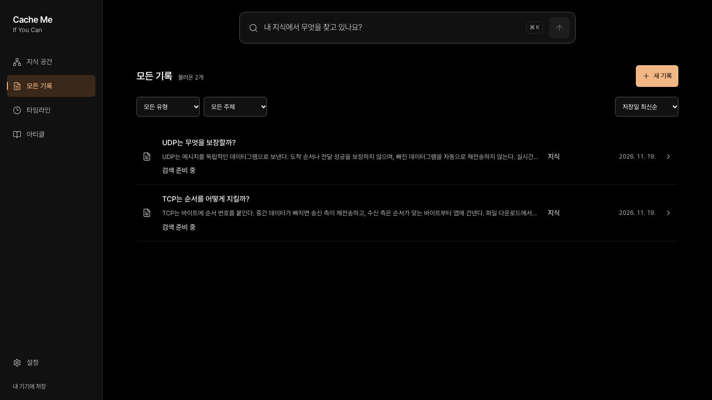

내가 Codex에 하는 말
“방금 배운 TCP와 UDP, 각각 캐시미 해줘.”
- Codex가 읽는 스킬
cache-me나중에 따로 찾도록 TCP와 UDP를 각각 정리합니다.
- MCP 도구 호출
- 내 로컬 서버가 실행하는 도구
capture_create두 기록의 제목과 본문을 한 건씩 저장합니다.

주제가 연결되면 지식 공간에서도 두 기록을 찾을 수 있습니다.
기능 가이드 / Codex
스킬은 Codex가 읽는 작업 지침입니다. MCP는 내 서재의 도구를 호출하는 규약입니다.
내가 Codex에 하는 말
cache-me나중에 따로 찾도록 TCP와 UDP를 각각 정리합니다.
capture_create두 기록의 제목과 본문을 한 건씩 저장합니다.

주제가 연결되면 지식 공간에서도 두 기록을 찾을 수 있습니다.
내가 Codex에 하는 말
cache-me-article관련 기록을 읽고 비교표와 출처가 있는 글을 씁니다.
article_create완성한 글과 인용을 아티클 한 편으로 등록합니다.

Codex가 돌려준 글 링크를 열면, 읽던 자리에서 인용을 펼칠 수 있습니다.

cache-me가 knowledge_search로 후보를 찾습니다. source_get으로 당시 저장한 본문 구간을 읽고 그 근거로 답합니다.
원자료를 고치려면 기록을 읽고 capture_update를 호출합니다. 발행한 글을 고치려면 아티클 링크로 현재 버전을 읽고 article_update로 새 버전을 등록합니다.
Codex가 기록을 읽고 대화에 초안을 보여 줍니다. 이때 article_create는 호출하지 않습니다. 글 등록을 요청하면 아티클 페이지의 링크를 받을 수 있습니다.
아티클 스킬은 공식 문서나 논문을 찾아 설명과 예시를 보강합니다. 글 안에서 기록 인용은 그때의 저장본을, 외부 원문 인용은 제목과 참고 요지를 보여 줍니다.